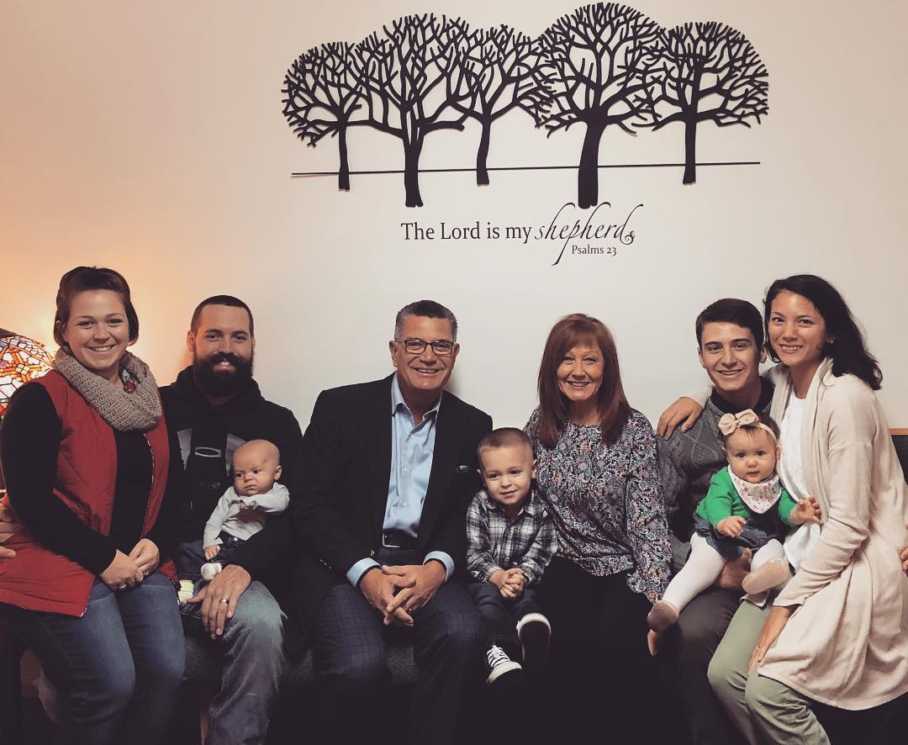
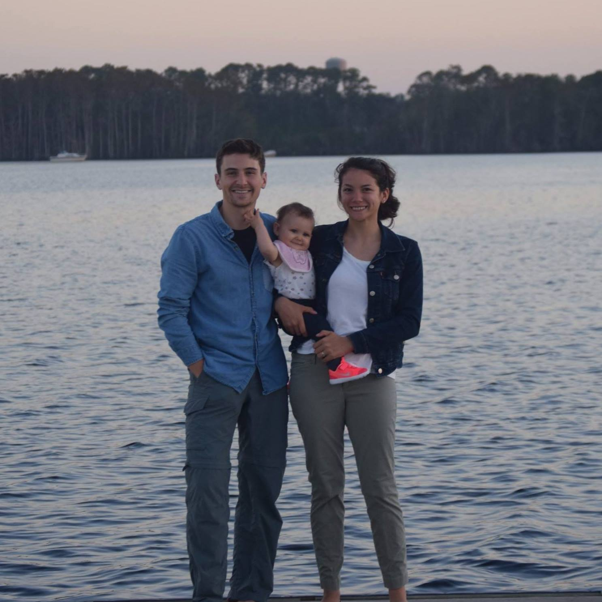

CHILDHOOD
Born and raised in St. Louis, I grew up in a single house with two lovely parents and an older sister. I was blessed with a pretty normal childhood. Piano lessons, soccer practice, airsoft guns. You get the idea.
Encompassing the very nature of immaturity, I was not fit for university studies. Dropping out after a whopping one semester, I joined the U.S. Navy.
CURRENTLY
As a recent Navy Veteran, I have been staying at home being a husband and father, studying whenever I can. The military has expanded not only my knowledge but my ability to learn, adapt to different cultures, and succeed in team-built working environments.
In my off time I enjoy reading, playing/watching golf, and spending time with my beautiful wife Gena and daughter Hazel.